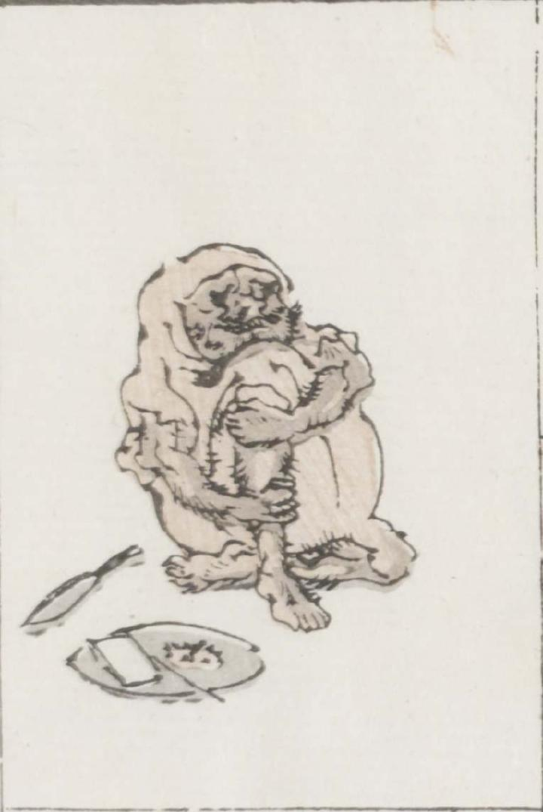

頭巾と一体になった僧衣のような着物をまとった男が座っている。ひげ面で毛深く、腹部が丸い。脇には食べ物が載っていると思われる皿と小刀らしきものが置いてある。
著作者：牧墨僊／出典：親書誌：U426_nichibunken_0097：滑稽洒落狂画苑；コッケイシャレキョウガエン／日付：2007／資源識別子：U426_nichibunken_0097_0042_0000
Copyright (c)2010- International Research Center for Japanese Studies, Kyoto, Japan. All rights reserved.